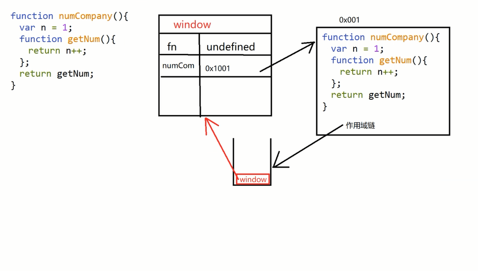
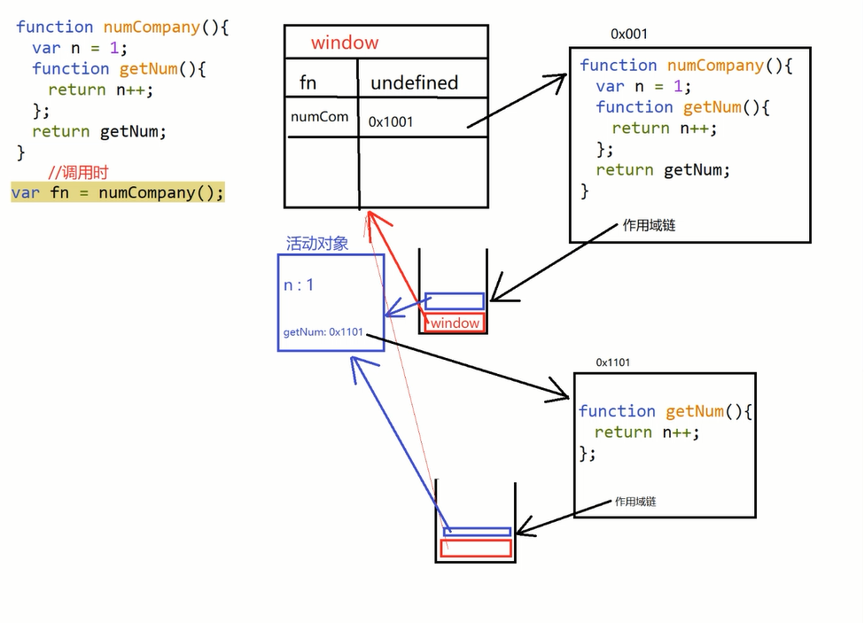
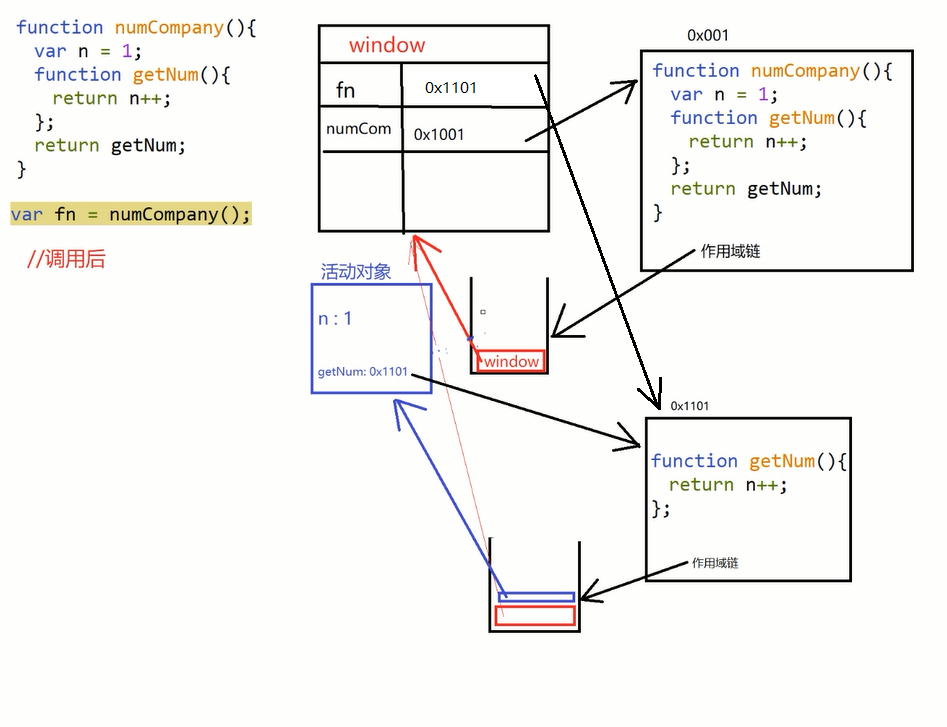
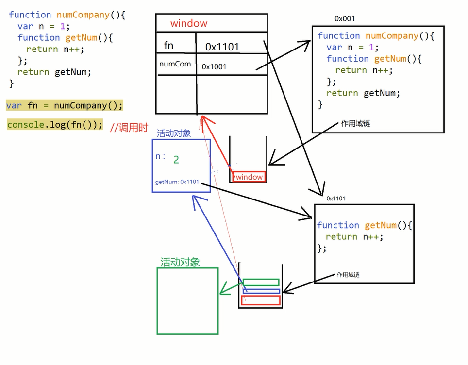
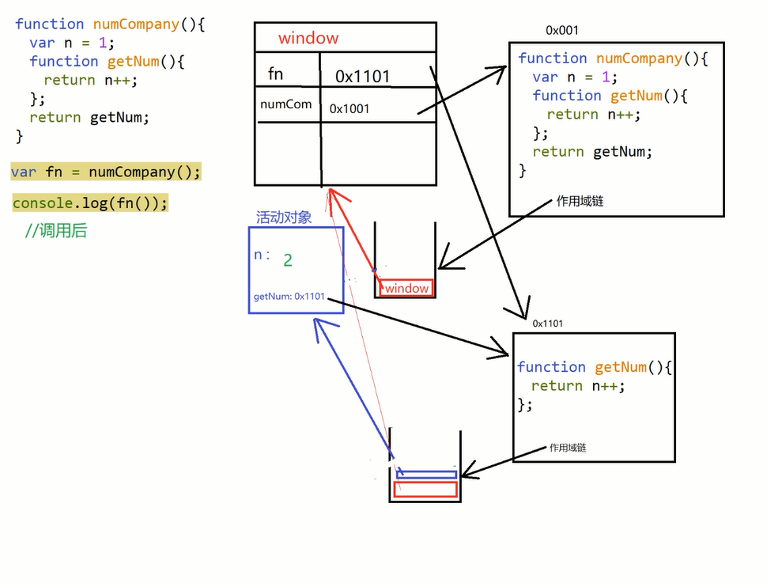

函数在创建的时候会创建两个对象，一个是函数对象本身，另一个是作用域链对象
函数在调用的时候会创建一个执行环境对象（活动对象）
闭包（closure）
问题：全局变量和局部变量各自有什么缺点？
全局变量：在函数体外定义的变量，每个函数都能使用修改，就会造成全局污染
局部变量：在函数体内定义的变量，只有当前函数能使用，但是不能在全局重复使用
既能重复使用，又不会污染全局？闭包！
闭包有三步：
1、外层函数嵌套内层函数
2、内层函数使用外层函数的局部变量
3、把内层函数作为外层函数的返回值
闭包可以在全局函数里面操作另一个作用域的局部变量
什么时候使用闭包？
既能重复使用，又不会污染全局
1、预解析





继承
子类共享父类的属性和方法,js的继承都是基于原型实现的
/定义一个动物类
function Animal (name) {
// 属性
this.name = name;
// 实例方法
this.say= function(){
console.log("My name is "+this.name);
}
}
// 原型方法
Animal.prototype.eat = function(food) {
console.log(this.name + '正在吃：' + food);
};
原型链继承：子类的原型指向父类的实例
function Cat(){
}
Cat.prototype = new Animal();
Cat.prototype.name = 'cat';
var cat = new Cat();
console.log(cat.name);
cat.say();
cat.eat('fish');
console.log(cat instanceof Animal); //true
console.log(cat instanceof Cat); //true
特点：
非常纯粹的继承关系，实例是子类的实例，也是父类的实例
父类新增原型方法/原型属性，子类都能访问到
简单，易于实现
缺点：
要想为子类新增属性和方法，必须要在new Animal()这样的语句之后执行，不能放到构造器中
无法实现多继承
来自原型对象的引用属性是所有实例共享的
创建子类实例时，无法向构造函数传参
构造继承（call、apply继承）
function Cat(name){
Animal.call(this,name);
}
var cat = new Cat("Tom");
console.log(cat.name);
cat.say();
console.log(cat instanceof Animal); // false
console.log(cat instanceof Cat); // true
特点：
解决了1中，子类实例共享父类引用属性的问题
创建子类实例时，可以向父类传递参数
可以实现多继承（call多个父类对象）
缺点：
实例并不是父类的实例，只是子类的实例
只能继承父类的实例属性和方法，不能继承原型属性/方法
无法实现函数复用，每个子类都有父类实例函数的副本，影响性能
拷贝继承
function Cat(name){
var animal = new Animal(name);
for(var key in animal){
Cat.prototype[key] = animal[key];
}
}
// Test Code
var cat = new Cat("Tom");
console.log(cat.name);
cat.say();
console.log(cat instanceof Animal); // false
console.log(cat instanceof Cat); // true
特点：
支持多继承
缺点：
效率较低，内存占用高（因为要拷贝父类的属性）
无法获取父类不可枚举的方法（不可枚举方法，不能使用for in 访问到）
组合继承（原型链和构造继承的组合）
function Cat(name){
Animal.call(this,name);
}
Cat.prototype = new Animal();
Cat.prototype.constructor = Cat;
// Test Code
var cat = new Cat();
console.log(cat.name);
cat.say();
console.log(cat instanceof Animal); // true
console.log(cat instanceof Cat); // true
特点：
弥补了方式2的缺陷，可以继承实例属性/方法，也可以继承原型属性/方法
既是子类的实例，也是父类的实例
不存在引用属性共享问题
可传参
函数可复用
缺点：
调用了两次父类构造函数，生成了两份实例（子类实例将子类原型上的那份屏蔽了）
5.寄生组合继承
function Cat(name){
Animal.call(this);
this.name = name;
}
(function(){
// 创建一个没有实例方法的类
var Super = function(){};
Super.prototype = Animal.prototype;
//将实例作为子类的原型
Cat.prototype = new Super();
})();
// Test Code
var cat = new Cat();
console.log(cat.name);
cat.say();
console.log(cat instanceof Animal); // true
console.log(cat instanceof Cat); //true
特点：堪称完美
缺点：实现较为复杂
6. ES6继承（语法糖）
class Animal{
constructor(name){
this.name = name;
}
say(){
alert("My name is "+this.name);
}
eat(food){
alert(this.name+" is eating "+food);
}
}
class Cat extends Animal{
constructor(name){
super(name);
}
}
var tom = new Cat("Tom");
tom.say();
tom.eat("apple");
console.log(cat instanceof Animal); // true
console.log(cat instanceof Cat); //true
案例：原型拖拽